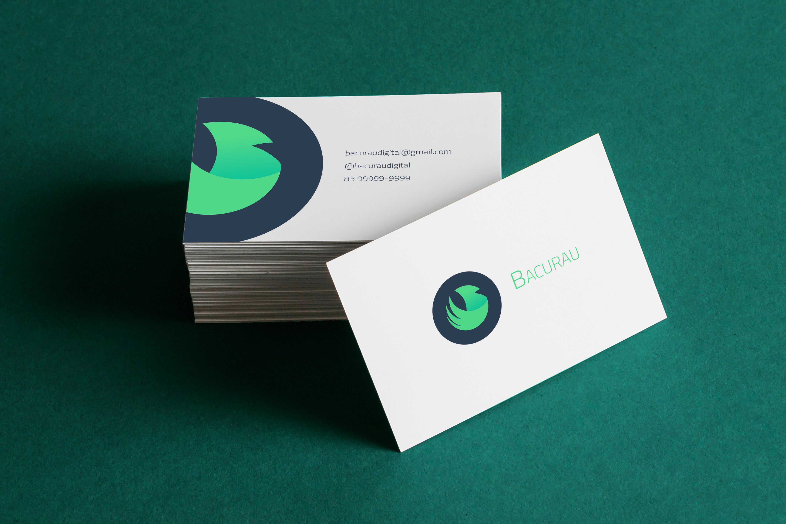
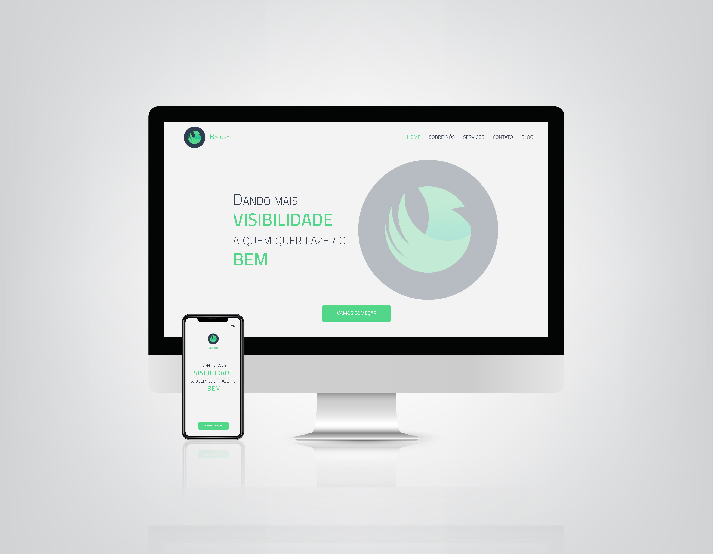

Apresentação da marca
Bacurau
Bacurau
-
Missão:
Ligar ferramentas e estratégias criativas para fazer do mundo um lugar melhor.
-
Visão:
Dar mais visibilidade a quem quer fazer o bem.
-
Valores:
Respeito, liberdade, clareza e habilidade de ouvir.
Tipografia
Tipografia
A família tipográfica escolhida para a identidade visual da marca foi a Cairo em sua versão Light.
Cores
Cores
As cores foram escolhidas com o objetivo de transmitir as sensações a seguir, porém tendo em vista de que cada pessoa ver uma cor com olhos diferentes.
Equilíbrio
HEX: #56d684
RGB: rgb(86, 21,4 132)
HSL: hsl(142deg, 61%, 59%)
Confiabilidade
HEX: #4ebf9b
RGB: rgb(78, 19,1 155)
HSL: hsl(161deg, 47%, 53%)
Segurança
HEX: #2d3e50
RGB: rgb(45, 62, 80)
HSL: hsl(211deg, 28%, 25%)
Diagrama construtivo
Diagrama construtivo
Esse foi o diagrama construtivo usado afim de manter a simetria da logo usando a proporção áurea.
Logo
Logo
Esse é o resultado final da logo carregando consigo a responsabilidade de apresentar uma empresa com confiança e seriedade.
Escalas de tamanhos
Alguns exemplos de tamanho para se ter uma ideia da visibilidade da logo, começando por 42x42 pixels, tamanho usado, normalmente, em icons e favicons.
42x
2x
4x
6x
Escalas de cores
As seguintes representações mostra como a logo se comporta em aplicações como: Positivo, Negativo e em Tons de cinza.
Positivo
Negativo
Tons de cinza
Composição
A composição da marca é a logo e a tipografia, aqui apresentada, com suas margens de segurança.
Restrição de uso
A seguir alguns exemplos no uso da marca, das quais se deve evitar, pois são consideradas erradas.
Aplicações da marca
Cartão de visita
Site responsivo
Luciano Dantas
Designer de Logos & Desenvolvedor front-end